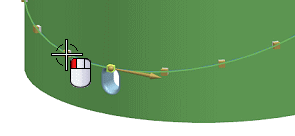
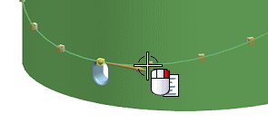
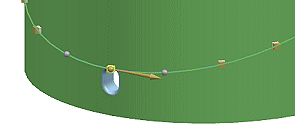
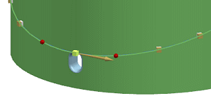
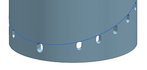

You can suppress and delete pattern instances. In this example, you suppress two slots.
In the Part Navigator, double-click Pattern (Along).
Select the instance handle to the left of the initial slot.

With the cursor over the instance handle to the right of the initial slot, right-click and select Suppress.


Notice how the instance handles changes to gray spheres to indicate it is suppressed.
|
Note |
The Delete option on the shortcut menu works in the same way as Suppress. The instance handles for deleted instances are displayed as red spheres.  |
In the Pattern Feature dialog box, click OK.
